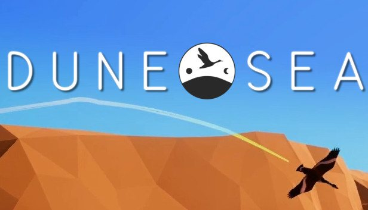
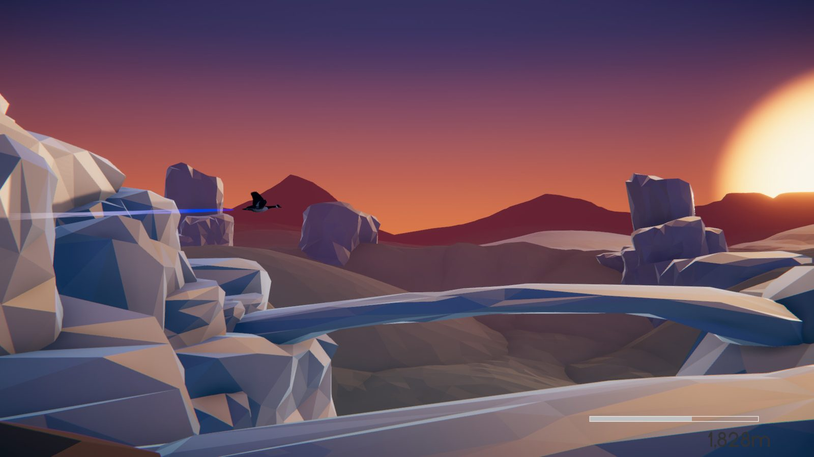
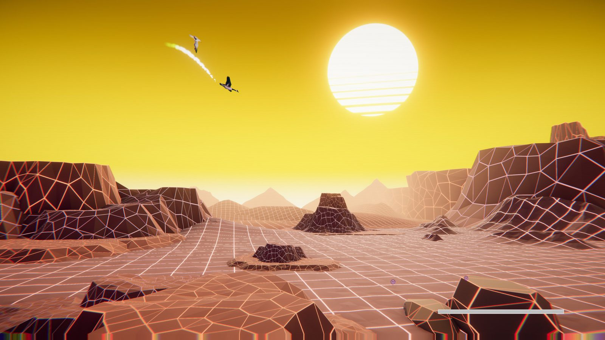
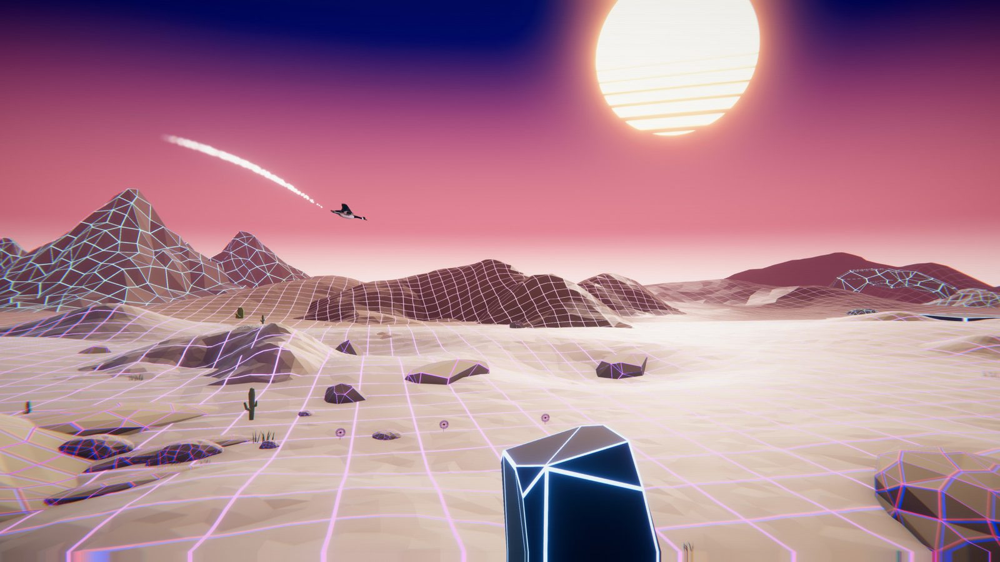

Frolic Labs
Dune Sea
User Interface Designer / QA Tester · July 2019 – October 2019
Project Information
- Release page
- View page
- Release Year
- 2019
- Studio
- Frolic Labs
- Position
- User Interface Designer / QA Tester
Position Summary
Side-scrolling exploration platformer where I owned the player-facing UI experience and supported the project through wireframes, asset production, testing, and event presentation. The work focused on making a calm, readable interface that supported the tone of the game without interrupting flow.
Selected Responsibilities
- Designed the full UI flow across main menu, settings, tutorial, pause, level select, and in-game interface.
- Produced UI assets and flow documentation to support implementation.
- Playtested the build to identify usability problems, bugs, and friction in moment-to-moment navigation.
- Supported a more cohesive player-facing presentation through iteration and feedback.
Trailer / Footage
Selected Gallery


